About various database connectivity technologies
About various database connectivity technologies14 DATABASE CONNECTIVITY AND WEB TECHNOLOGIES
In this chapter, you will learn:
About various database connectivity technologies
How Web-to-database middleware is used to integrate databases with the Internet
About Web browser plug-ins and extensions
What services are provided by Web application servers
What Extensible Markup Language (XML) is and why it is important for Web database development
About cloud computing and how it enables the database-as-a-service model
Preview
Databases are the central repository for critical data generated by business applications, including newer channels such as the Web and mobile devices. For businesses to remain competitive, such data must be readily available, anywhere and anytime, to all business users and in all types of formats: a desktop spreadsheet, a Visual Basic application, a Web front end, and newer technologies such as iPads, Playbooks, iPhones, and Android phones. In this chapter, you will learn about various architectures used to connect applications to databases.
The Internet has changed how organizations of all types operate. For example, buying goods and services via the Internet has become commonplace. This chapter examines the fundamentals of Web database technologies used to open databases to the Internet. In today’s environment, interconnectivity occurs not only between an application and the database but between applications interchanging messages and data. Extensible Markup Language (XML) provides a standard way of exchanging unstructured and structured data between applications.
Companies that want to integrate database and Web technologies within their applications portfolio can now choose from a range of Internet-based services. Therefore, you will learn how organizations can benefit from cloud computing by leveraging the database-as-a-service model within their IT environments. These cloud-based services offer a quick and cost-efficient way to provide new business services.
Database connectivity refers to the mechanisms through which application programs connect and communicate with data repositories. Database connectivity software is also known as database middleware because it provides an interface between the application program and the database. The data repository, also known as the data source, represents the data management application, such as Oracle RDBMS, SQL Server DBMS, or IBM DBMS, that will be used to store the data generated by the application program. Ideally, a data source or data repository could be located anywhere and hold any type of data. For example, the data source could be a relational database, a NoSQL database, a spreadsheet, or a text data file.
The need for standard database connectivity interfaces cannot be overstated. Just as SQL has become the de facto data manipulation language, a standard database connectivity interface is necessary for enabling applications to connect to data repositories. Although there are many ways to achieve database connectivity, this section covers only the following interfaces:
• Native SQL connectivity (vendor provided)
• Microsoft’s Open Database Connectivity (ODBC), Data Access Objects (DAO), and Remote Data Objects (RDO)
• Microsoft’s Object Linking and Embedding for Database (OLE-DB)
• Microsoft’s ActiveX Data Objects (ADO.NET)
• Sun’s Java Database Connectivity (JDBC)
You should not be surprised to learn that most interfaces you are likely to encounter are Microsoft offerings. After all, client applications connect to databases, and the majority of those applications run on computers that are powered by some version of Microsoft Windows. The data connectivity interfaces illustrated here are dominant players in the market, and more importantly, they enjoy the support of most database vendors. In fact, ODBC, OLE-DB, and ADO. NET form the backbone of Microsoft’s Universal Data Access (UDA) architecture, a collection of technologies used to access any type of data source and manage the data through a common interface. As you will see, Microsoft’s database connectivity interfaces have evolved over time: each interface builds on top of the other, thus providing enhanced functionality, features, flexibility, and support.
14.1.1 NATIVE SQL CONNECTIVITY
Most DBMS vendors provide their own methods for connecting to their databases. Native SQL connectivity refers to the connection interface that is provided by the database vendor and is unique to that vendor. The best example of this type of native interface is the Oracle RDBMS. To connect a client application to an Oracle database, you must install and configure Oracle’s SQL*Net interface in the client computer. Figure 14.1 shows the configuration of the Oracle SQL*Net interface on the client computer.
FIGURE14.1 Oracle native connectivity
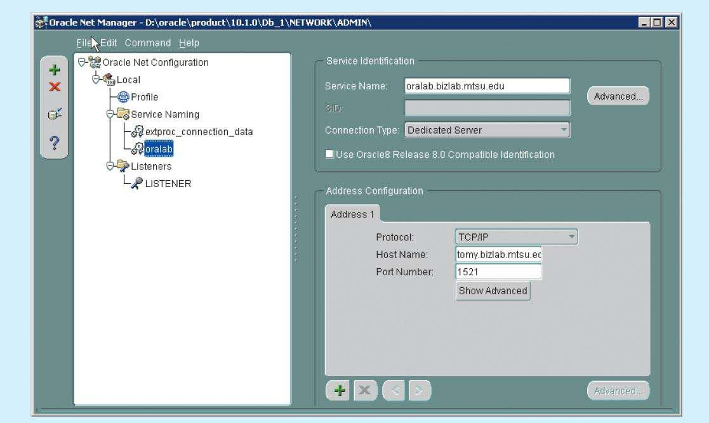
SOURCE: Course Technology/Cengage Learning
Native database connectivity interfaces are optimized for “their” DBMS, and those interfaces support access to most or all of the database features. However, maintaining multiple native interfaces for different databases can become a burden for the programmer. Therefore, the need for “universal” database connectivity arises. Usually, the native database connectivity interface provided by the vendor is not the only way to connect to a database; most current DBMS products support other database connectivity standards, the most common being ODBC.
Developed in the early 1990s, Open Database Connectivity (ODBC) is Microsoft’s implementation of a superset of the SQL Access Group Call Level Interface (CLI) standard for database access. ODBC is probably the most widely supported database connectivity interface. ODBC allows any Windows application to access relational data sources, using SQL via a standard application programming interface (API). The Webopedia online dictionary (www.webopedia.com) defines an API as “a set of routines, protocols, and tools for building software applications.” A good API makes it easy to develop a program by providing all of the building blocks; the programmer puts the blocks together. Most operating environments, such as Windows, provide an API so that programmers can write applications consistent with the operating environment. Although APIs are designed for programmers, they are ultimately good for users because they guarantee that all programs using a common API will have similar interfaces. That makes it easy for users to learn new programs.
ODBC was the first widely adopted database middleware standard, and it enjoyed rapid adoption in Windows applications. As programming languages evolved, ODBC did not provide significant functionality beyond the ability to execute SQL to manipulate relational-style data. Therefore, programmers needed a better way to access data. To answer that need, Microsoft developed two other data access interfaces:
• Data Access Objects (DAO) is an object-oriented API used to access MS Access, MS FoxPro, and dBase databases (using the Jet data engine) from Visual Basic programs. DAO provides an optimized interface that exposes programmers to the functionality of the Jet data engine, on which the MS Access database is based. The DAO interface can also be used to access other relational-style data sources.
• Remote Data Objects (RDO) is a higher-level, object-oriented application interface used to access remote database servers. RDO uses the lower-level DAO and ODBC for direct access to databases. RDO is optimized to deal with server-based databases such as MS SQL Server, Oracle, and DB2.
Figure 14.2 illustrates how Windows applications can use ODBC, DAO, and RDO to access local and remote relational data sources.
FIGURE 14.2 Using ODBC, DAO, and RDO to access databases
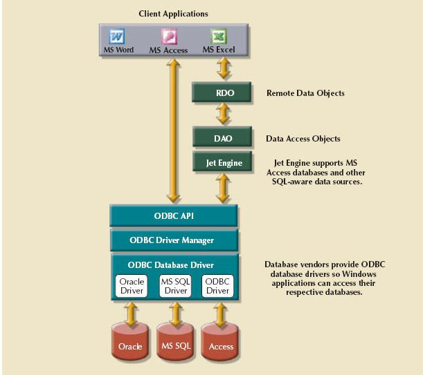
SOURCE: Course Technology/Cengage Learning
The DAO and RDO object interfaces provide more functionality than ODBC. DAO and RDO make use of the underlying ODBC data services. ODBC, DAO, and RDO are implemented as shared code that is dynamically linked to the Windows operating environment through dynamic-link libraries (DLLs), which are stored as files with a .dll extension. Running as a DLL, the code speeds up load and run times.
The basic ODBC architecture has three main components:
• A high-level ODBC API through which application programs access ODBC functionality
• A driver manager that is in charge of managing all database connections
• An ODBC driver that communicates directly to the DBMS
Defining a data source is the first step in using ODBC. To define a data source, you must create a data source name (DSN) for it. To create a DSN, you need to provide the following:
• An ODBC driver. You must identify the driver to use to connect to the data source. The ODBC driver is normally provided by the database vendor, although Microsoft provides several drivers that connect to most common databases. For example, if you are using an Oracle DBMS, you would select the Oracle ODBC driver provided by Oracle. Or, you could instead select the Microsoft-provided ODBC driver for Oracle.
• A name. This is a unique name by which the data source will be known to ODBC, and therefore to applications. ODBC offers two types of data sources: user and system. User data sources are available only to the user. System data sources are available to all users, including operating system services.
• ODBC driver parameters. Most ODBC drivers require specific parameters to establish a connection to the database. For example, if you are using an MS Access database, you must point to the location of the MS Access file and then provide a username and password if necessary. If you are using a DBMS server, you must provide the server name, the database name, the username, and the password needed to connect to the database. Figure 14.3 shows the ODBC screens required to create a system ODBC data source for an Oracle DBMS. Note that some ODBC drivers use the native driver provided by the DBMS vendor.
FIGURE 14.3 Configuring an Oracle ODBC data source
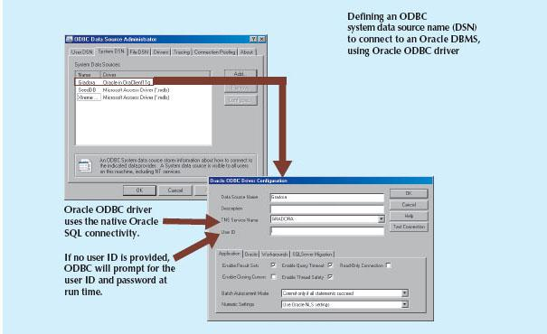
SOURCE: Course Technology/Cengage Learning
Once the ODBC data source is defined, application programmers can write to the ODBC API by issuing specific commands and providing the required parameters. The ODBC Driver Manager will properly route the calls to the appropriate data source. The ODBC API standard defines three levels of compliance: Core, Level-1, and Level-2, which provide increasing levels of functionality. For example, Level-1 might provide support for most SQL DDL and DML statements, including subqueries and aggregate functions, but not for procedural SQL or cursors. The database vendors can choose which level to support. However, to interact with ODBC, the database vendor must implement all of the features in the specified ODBC API support level.
Figure 14.4 shows how you could use MS Excel to retrieve data from an Oracle RDBMS using ODBC. Because much of the functionality provided by these interfaces is oriented toward accessing relational data sources, the use of the interfaces was limited with other data source types. With the advent of object-oriented programming languages, it has become more important to provide access to other nonrelational data sources.
FIGURE 14.4 MS Excel uses ODBC to connect to an Oracle database
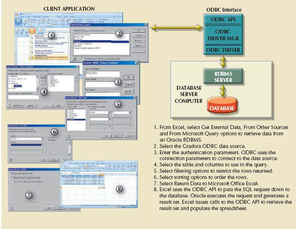
SOURCE: Course Technology/Cengage Learning
Although ODBC, DAO, and RDO are used, they do not provide support for nonrelational data. To answer that need and to simplify data connectivity, Microsoft developed Object Linking and Embedding for Database (OLE-DB).Based on Microsoft’s Component Object Model (COM), OLE-DB is database middleware that adds object-oriented functionality for access to relational and nonrelational data. OLE-DB was the first part of Microsoft’s strategy to provide a unified object-oriented framework for the development of next-generation applications.
OLE-DB is composed of a series of COM objects that provide low-level database connectivity for applications. Because OLE-DB is based on COM, the objects contain data and methods, also known as the interface. The OLE-DB model is better understood when you divide its functionality into two types of objects:
• Consumers are objects (applications or processes) that request and use data. Consumers request data by invoking the methods exposed by the data provider objects (public interface) and passing the required parameters.
• Providers are objects that manage the connection with a data source and provide data to the consumers. Providers are divided into two categories: data providers and service providers.
- Data providers provide data to other processes. Database vendors create data provider objects that expose the functionality of the underlying data source (relational, object-oriented, text, and so on).
- Service providers provide additional functionality to consumers. The service provider is located between the data provider and the consumer. The service provider requests data from the data provider, transforms the data, and then provides the transformed data to the data consumer. In other words, the service provider acts like a data consumer of the data provider and as a data provider for the data consumer (end-user application). For example, a service provider could offer cursor management services, transaction management services, query processing services, and indexing services.
As a common practice, many vendors provide OLE-DB objects to augment their ODBC support, effectively creating a shared object layer on top of their existing database connectivity (ODBC or native) through which applications can interact. The OLE-DB objects expose functionality about the database; for example, there are objects that deal with relational data, hierarchical data, and flat-file text data. Additionally, the objects implement specific tasks, such as establishing a connection, executing a query, invoking a stored procedure, defining a transaction, or invoking an OLAP function. By using OLE-DB objects, the database vendor can choose what functionality to implement in a modular way, instead of being forced to include all of the functionality all of the time. Table 14.1 shows a sample of the object-oriented classes used by OLE-DB and some of the methods (interfaces) exposed by the objects.
TABLE 14.1 Sample OLE-DB Classes and Interfaces
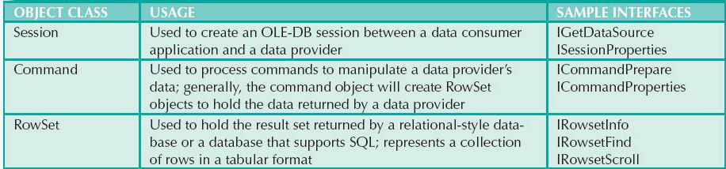
OLE-DB provides additional capabilities for the applications accessing the data. However, it does not provide support for scripting languages, especially the ones used for Web development, such as Active Server Pages (ASP) and ActiveX. (A script is written in a programming language that is not compiled but is interpreted and executed at run time.) To provide that support, Microsoft developed a new object framework called ActiveX Data Objects (ADO), which provides a high-level, application-oriented interface to interact with OLE-DB, DAO, and RDO. ADO provides a unified interface to access data from any programming language that uses the underlying OLE-DB objects. Figure 14.5 illustrates the ADO/OLE-DB architecture and how it interacts with ODBC and native connectivity options.
FIGURE14.5 OLE-DB architecture
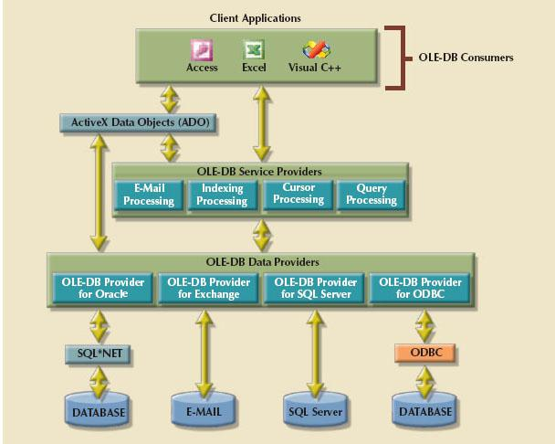
SOURCE: Course Technology/Cengage Learning
ADO introduced a simpler object model that was composed of only a few interacting objects to provide the data manipulation services required by the applications. Sample objects in ADO are shown in Table 14.2.
OBJECT CLASS | USAGE |
Connection | Used to set up and establish a connection with a data source. ADO will connect OLE-DB data source. The data source can be of any type. |
Command | Used to execute commands against a specific connection (data source) |
Recordset | Contains the data generated by the execution of a command. It will also contain new data to be written to the data source. The Recordset can be disconnected from data source. |
Fields | Contains a collection of field descriptions for each column in the Recordset |
Although the ADO model is a tremendous improvement over the OLE-DB model, Microsoft is actively encouraging programmers to use its newer data access framework, ADO.NET.
Based on ADO, ADO.NET is the data access component of Microsoft’s .NET application development framework. The Microsoft .NET framework is a component-based platform for developing distributed, heterogeneous, interoperable applications aimed at manipulating any type of data using any combination of network, operating system, and programming language. Comprehensive coverage of the .NET framework is beyond the scope of this book. Therefore, this section only introduces the basic data access component of the .NET architecture, ADO.NET.
It is important to understand that the .NET framework extends and enhances the functionality provided by the ADO/ OLE-DB duo. ADO.NET introduced two new features that are critical for the development of distributed applications: DataSets and XML support.
To understand the importance of this new model, you should know that a DataSet is a disconnected, memory-resident representation of the database. That is, the DataSet contains tables, columns, rows, relationships, and constraints. Once the data are read from a data provider, they are placed in a memory-resident DataSet, which is then disconnected from the data provider. The data consumer application interacts with the data in the DataSet object to make inserts, updates, and deletes in the DataSet. Once the processing is done, the DataSet data are synchronized with the data source and the changes are made permanent.
The DataSet is internally stored in XML format, and the data in the DataSet can be made persistent as XML documents. This is critical in today’s distributed environments. You can think of the DataSet as an XML-based, in-memory database that represents the persistent data stored in the data source. (You will learn about XML later in this chapter.)
Figure 14.6 illustrates the main components of the ADO.NET object model.
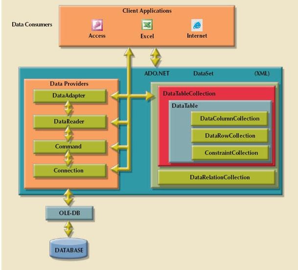
SOURCE: Course Technology/Cengage Learning
The ADO.NET framework consolidates all data access functionality under one integrated object model. In this object model, several objects interact with one another to perform specific data manipulations. These objects can be grouped as data providers and consumers.
Data provider objects are provided by the database vendors. However, ADO.NET comes with two standard data providers: one for OLE-DB data sources and one for SQL Server. That way, ADO.NET can work with any previously supported database, including an ODBC database with an OLE-DB data provider. At the same time, ADO.NET includes a highly optimized data provider for SQL Server.
Whatever the data provider is, it must support a set of specific objects to manipulate the data in the data source. Some of those objects are shown in Figure 14.6. A brief description of the objects follows.
• Connection. The Connection object defines the data source used, the name of the server, the database, and so on. This object enables the client application to open and close a connection to a database.
• Command. The Command object represents a database command to be executed within a specified database connection. This object contains the actual SQL code or a stored procedure call to be run by the database. When a SELECT statement is executed, the Command object returns a set of rows and columns.
• DataReader. The DataReader object is a specialized object that creates a read-only session with the database to retrieve data sequentially (forward only) and very quickly.
• DataAdapter. The DataAdapter object is in charge of managing a DataSet object, and is the most specialized object in the ADO.NET framework. The DataAdapter object contains the following objects that aid in managing the data in the DataSet: SelectCommand, InsertCommand, UpdateCommand, and DeleteCommand. The DataAdapter object uses these objects to populate and synchronize the data in the DataSet with the permanent data source data.
• DataSet. The DataSet object is the in-memory representation of the data in the database. This object contains two main objects. The DataTableCollection object contains a collection of DataTable objects that make up the “in-memory” database, and the DataRelationCollection object contains a collection of objects that describe the data relationships and ways to associate one row in a table to the related row in another table.
• DataTable. The DataTable object represents the data in tabular format. This object has one very important property: PrimaryKey, which allows the enforcement of entity integrity. In turn, the DataTable object is composed of three main objects:
- DataColumnCollection contains one or more column descriptions. Each column description has properties such as column name, data type, nulls allowed, maximum value, and minimum value.
- DataRowCollection contains zero rows, one row, or more than one row with data as described in the DataColumnCollection.
- ConstraintCollection contains the definition of the constraints for the table. Two types of constraints are supported: ForeignKeyConstraint and UniqueConstraint.
As you can see, a DataSet is a simple database with tables, rows, and constraints. Even more importantly, the DataSet does not require a permanent connection to the data source. The DataAdapter uses the SelectCommand object to populate the DataSet from a data source. However, once the DataSet is populated, it is completely independent of the data source, which is why it is called disconnected.
Additionally, DataTable objects in a DataSet can come from different data sources. This means that you could have an EMPLOYEE table in an Oracle database and a SALES table in a SQL Server database. You could then create a DataSet that relates both tables as though they were in the same database. In short, the DataSet object paves the way for truly heterogeneous, distributed database support within applications.
The ADO.NET framework is optimized to work in disconnected environments. In a disconnected environment, applications exchange messages in request/reply format. The most common example of a disconnected system is the Internet. Modern applications rely on the Internet as the network platform and on the Web browser as the graphical user interface. In later sections, you will learn about how Internet databases work.
14.1.5 JAVA DATABASE CONNECTIVITY (JDBC)
Java is an object-oriented programming language developed by Sun Microsystems that runs on top of Web browser software. Java is one of the most common programming languages for Web development. Sun Microsystems created Java as a “write once, run anywhere” environment, which means that a programmer can write a Java application once and then run it in multiple environments without any modification. The cross-platform capabilities of Java are based on its portable architecture. Java code is normally stored in preprocessed “chunks” known as applets that run in a virtual machine environment in the host operating system. This environment has well-defined boundaries, and all interactivity with the host operating system is closely monitored. Sun provides Java run-time environments for most operating systems, from computers to handheld mobile devices to TV set-top boxes. Another advantage of using Java is its “on-demand” architecture. When a Java application loads, it can dynamically download all its modules or required components via the Internet.
When Java applications need to access data outside the Java run-time environment, they use predefined application programming interfaces. Java Database Connectivity (JDBC) is an application programming interface that allows a Java program to interact with a wide range of data sources, including relational databases, tabular data sources, spreadsheets, and text files. JDBC allows a Java program to establish a connection with a data source, prepare and send the SQL code to the database server, and process the result set.
One main advantage of JDBC is that it allows a company to leverage its existing investment in technology and personnel training. JDBC allows programmers to use their SQL skills to manipulate the data in the company’s databases. As a matter of fact, JDBC allows direct access to a database server or access via database middleware. Furthermore, JDBC provides a way to connect to databases through an ODBC driver. Figure 14.7 illustrates the basic JDBC architecture and the various database access styles.
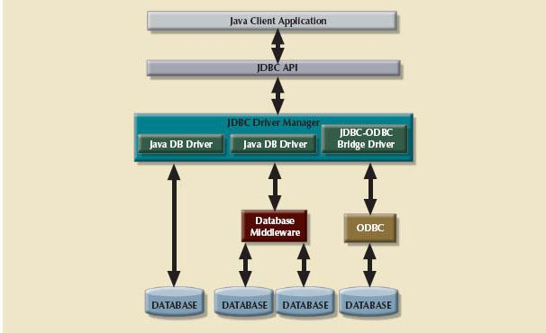
SOURCE: Course Technology/Cengage Learning
As you see in Figure 14.7, the database access architecture in JDBC is very similar to the ODBC/OLE/ADO.NET architecture. All database access middleware shares similar components and functionality. One advantage of JDBC over other middleware is that it requires no configuration on the client side. The JDBC driver is automatically downloaded and installed as part of the Java applet download. Because Java is a Web-based technology, applications can connect to a database directly using a simple URL. Once the URL is invoked, the Java architecture comes into play, the necessary applets are downloaded to the client (including the JDBC database driver and all configuration information), and then the applets are executed securely in the client’s run-time environment.
Every day, more and more companies are investing resources to develop and expand their Web presence and are finding ways to do more business on the Internet. Such business generates increasing amounts of data to be stored in databases. Java and the .NET framework are part of the trend toward increasing reliance on the Internet as a critical business resource. In fact, the Internet is likely to become the development platform of the future. In the next section, you will learn more about Internet databases and how they are used.
14.2 DATABASE INTERNET CONNECTIVITY
Millions of people all over the world access the Internet and connect to databases via Web browsers or data services. For example, they can use a smart phone applet to get weather information. Internet database connectivity opens the door to new, innovative services that do the following:
• Permit rapid responses to competitive pressures by bringing new services and products to market quickly.
• Increase customer satisfaction through the creation of Web-based support services.
• Allow anywhere, anytime data access using mobile smart devices via the Internet.
• Yield fast and effective information dissemination through universal access from across the street or across the globe.
Given these advantages, many organizations rely on their IT departments to create universal data access architectures based on Internet standards. Table 14.3 shows a sample of Internet technology characteristics and the benefits they provide.
TABLE 14.3 Characteristics and Benefits of Internet Technologies
INTERNET CHARACTERISTIC | BENEFIT |
Hardware and software independence | Savings in equipment and software acquisition Ability to run on most existing equipment Platform independence and portability No need for multiple platform development |
Common and simple user interface | Reduced training time and cost Reduced end-user support cost No need for multiple platform development |
Location independence | Global access through Internet infrastructure and mobile smart Reduced requirements (and costs!) for dedicated connections |
Rapid development at manageable costs | Availability of multiple development tools Plug-and-play development tools (open standards) More interactive development Reduced development times Relatively inexpensive tools Free client access tools (Web browsers) Low entry costs; frequent availability of free Web servers Reduced costs of maintaining private networks Distributed processing and scalability using multiple servers |
As you will learn in the following sections, database application development—particularly the creation and management of user interfaces and database connectivity—is profoundly affected by the Web. However, having a Web-based database interface does not negate the design and implementation issues that were addressed in the previous chapters. In the final analysis, whether you make a purchase by going online or by standing in line, the system-level transaction details are essentially the same, and they require the same basic database structures and relationships. If any immediate lesson is to be learned, it is this: The effects of bad database design, implementation, and management are magnified in an environment in which transactions might be measured in hundreds of thousands per day rather than hundreds.
The simplicity of the Web’s interface and its cross-platform functionality are at the core of its success as a data access platform. In fact, the Web has helped create a new information dissemination standard. The following sections examine how Web-to-database middleware enables end users to interact with databases over the Web.
14.2.1 WEB-TO-DATABASE MIDDLEWARE: SERVER-SIDE EXTENSIONS
In general, the Web server is the main hub through which all Internet services are accessed. For example, when an end user uses a Web browser to dynamically query a database, the client browser requests a Web page from the Web server. When the Web server receives the page request, it looks for the page on the hard disk; when it finds the page, the server sends it back to the client.
 ONLINE CONTENT
ONLINE CONTENT
Client/server systems are covered in detail in Appendix F, Client/Server Systems, at www.cengagebrain.com.
Dynamic Web pages are at the heart of current Websites. In this database query scenario, the Web server generates the Web page contents before it sends the page to the client Web browser. The only problem with the preceding query scenario is that the Web server must include the database query result on the page before it sends that page back to the client. Unfortunately, neither the Web browser nor the Web server knows how to connect to and read data from the database. Therefore, to support this type of request, the Web server’s capability must be extended so it can understand and process database requests. This job is known as a server-side extension.
A server-side extension is a program that interacts directly with the Web server to handle specific types of requests. In the preceding database query example, the server-side extension program retrieves the data from databases and passes the retrieved data to the Web server, which in turn sends the data to the client’s browser for display. The server-side extension makes it possible to retrieve and present the query results, but more importantly, it provides its services to the Web server in a way that is totally transparent to the client browser. In short, the server-side extension adds significant functionality to the Web server, and therefore to the Internet.
A database server-side extension program is also known as Web-to-database middleware. Figure 14.8 shows the interaction between the browser, the Web server, and the Web-to-database middleware.
FIGURE 14.8 Web-to-database middleware
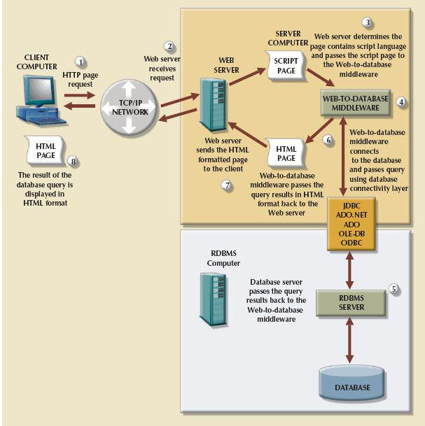
SOURCE: Course Technology/Cengage Learning
Trace the Web-to-database middleware actions in Figure 14.8:
• The client browser sends a page request to the Web server.
• The Web server receives and passes the request to the Web-to-database middleware for processing. Generally, the requested page contains some type of scripting language to enable the database interaction.
• The Web-to-database middleware reads, validates, and executes the script. In this case, it connects to the database and passes the query using the database connectivity layer.
• The database server executes the query and passes the result back to the Web-to-database middleware.
• The Web-to-database middleware compiles the result set, dynamically generates an HTML-formatted page that includes the data retrieved from the database, and sends it to the Web server.
• The Web server returns the just-created HTML page, which now includes the query result, to the client browser.
• The client browser displays the page on the local computer.
The interaction between the Web server and the Web-to-database middleware is crucial to the development of a successful Internet database implementation. Therefore, the middleware must integrate closely via a well-defined Web server interface.
Extending Web server functionality implies that the Web server and the Web-to-database middleware will properly communicate with each other. (Database professionals often use the word interoperate to indicate that each party can respond to the communications of the other.) A Web server interface defines a standard way to exchange messages with external programs. Currently, there are two well-defined Web server interfaces:
• Common Gateway Interface (CGI)
• Application programming interface (API)
The Common Gateway Interface (CGI) uses script files that perform specific functions based on the client’s parameters that are passed to the Web server. The script file is a small program containing commands written in a programming language—usually Perl, C#, or Visual Basic. The script file’s contents can be used to connect to the database and to retrieve data from it, using the parameters passed by the Web server. Next, the script converts the retrieved data to HTML format and passes the data to the Web server, which sends the HTML-formatted page to the client.
The main disadvantage of using CGI scripts is that the script file is an external program that executes separately for each user request and therefore causes a resource bottleneck. Performance also could be degraded by using an interpreted language or by writing the script inefficiently.
An application programming interface (API) is a newer Web server interface standard that is more efficient and faster than a CGI script. APIs are more efficient because they are implemented as shared code or as dynamic-link libraries (DLLs). That means the API is treated as part of the Web server program that is dynamically invoked when needed.
APIs are faster than CGI scripts because the code resides in memory, so there is no need to run an external program for each request. Instead, the same API serves all requests. Another advantage is that an API can use a shared connection to the database instead of creating a new one every time, as is the case with CGI scripts.
Although APIs are more efficient in handling requests, they have some disadvantages. Because the APIs share the same memory space as the Web server, an API error can bring down the Web server. Another disadvantage is that APIs are specific to the Web server and to the operating system.
The Web interface architecture is illustrated in Figure 14.9.
FIGURE 14.9 Web server CGI and API interfaces
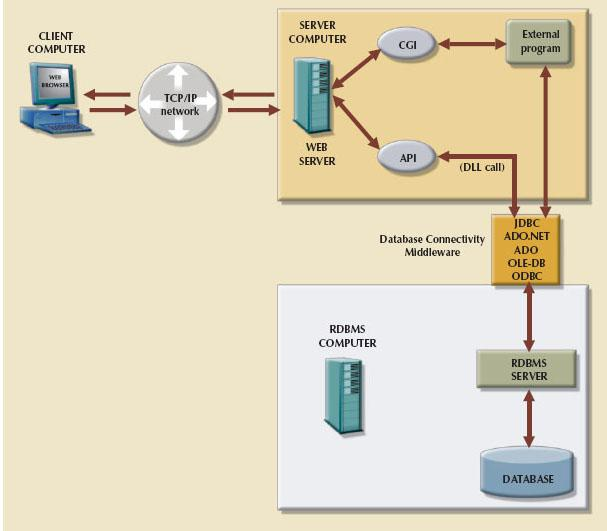
SOURCE: Course Technology/Cengage Learning
Regardless of the type of Web server interface used, the Web-to-database middleware program must be able to connect with the database. That connection can be accomplished in one of two ways:
• Use the native SQL access middleware provided by the vendor. For example, you can use SQL*Net if you are using Oracle.
• Use the services of general database connectivity standards such as ODBC, OLE-DB, ADO, ADO.NET, or JDBC.
The Web browser is software such as Microsoft Internet Explorer, Google Chrome, Apple Safari, or Mozilla Firefox that lets end users navigate the Web from their client computer. Each time the end user clicks a hyperlink, the browser generates an HTTP GET page request that is sent to the designated Web server using the TCP/IP Internet protocol.
The Web browser’s job is to interpret the HTML code that it receives from the Web server and to present the various page components in a standard formatted way. Unfortunately, the browser’s interpretation and presentation capabilities are not sufficient to develop Web-based applications. The Web is a stateless system—at any given time, a Web server does not know the status of any of the clients communicating with it. That is, there is no open communication line between the server and each client accessing it, which of course is impractical in a worldwide Web! Instead, client and server computers interact in very short “conversations” that follow the request-reply model. For example, the browser is concerned only with the current page, so there is no way for the second page to know what was done in the first page. The only time the client and server computers communicate is when the client requests a page—when the user clicks a link—and the server sends the requested page to the client. Once the client receives the page and its components, the client/server communication is ended. Therefore, although you may be browsing a page and think that the communication is open, you are actually just browsing the HTML document stored in the local cache (temporary directory) of your browser. The server does not have any idea what the end user is doing with the document, what data are entered in a form, what option is selected, and so on. On the Web, if you want to act on a client’s selection, you need to jump to a new page (go back to the Web server), thus losing track of what was done before.
The Web browser, through its use of HTML, does not have computational abilities beyond formatting output text and accepting form field inputs. Even when the browser accepts form field data, there is no way to perform immediate data entry validation. Therefore, to perform such crucial processing in the client, the Web defers to other Web programming languages such as Java, JavaScript, and VBScript. The browser resembles a dumb terminal that displays only data and can perform only rudimentary processing such as accepting form data inputs. To improve the capabilities of the Web browser, you must use plug-ins and other client-side extensions. On the server side, Web application servers provide the necessary processing power.
Client-side extensions add functionality to the Web browser. Although client-side extensions are available in various forms, the most common are:
• Plug-ins
• Java and JavaScript
• ActiveX and VBScript
A plug-in is an external application that is automatically invoked by the browser when needed. The plug-in is associated with a data object—generally using the file extension—to allow the Web server to properly handle data that are not originally supported. For example, if one of the page components is a PDF document, the Web server will receive the data, recognize it as a Portable Document Format object, and launch Adobe Acrobat Reader to present the document on the client computer.
JavaScript is a scripting language (one that enables the execution of a series of commands or macros) that allows Web authors to design interactive sites. JavaScript code is embedded in the Web page and executed after a specific event, such as a mouse click on an object or a page being loaded from the server into memory.
ActiveX is Microsoft’s alternative to Java. ActiveX is a specification for writing programs that run inside the Microsoft client browser, Internet Explorer. Because ActiveX is oriented toward Windows applications, it has low portability. ActiveX extends the Web browser by adding controls to Web pages, including drop-down lists, a slider, a calendar, and a calculator. Those controls are downloaded from the Web server when needed so you can manipulate data inside the browser. ActiveX controls can be created in several programming languages; C++ and Visual Basic are most commonly used. Microsoft’s .NET framework allows for wider interoperability of ActiveX-based applications (such as ADO. NET) across multiple operating environments.
VBScript is another Microsoft product that is used to extend browser functionality. VBScript is derived from Microsoft Visual Basic. Like JavaScript, VBScript code is embedded inside an HTML page and is activated by triggering events such as clicking a link.
From the developer’s point of view, using routines that permit data validation on the client side is an absolute necessity. For example, when data are entered in a Web form and no data validation is done on the client side, the entire data set must be sent to the Web server. That scenario requires the server to perform all data validation, thus wasting valuable CPU processing cycles. Therefore, client-side data input validation is one of the most basic requirements for Web applications. Most of the data validation routines are done in Java, JavaScript, ActiveX, or VBScript.
14.2.5 WEB APPLICATION SERVERS
A Web application server is a middleware application that expands the functionality of Web servers by linking them to a wide range of services, such as databases, directory systems, and search engines. The Web application server also provides a consistent run-time environment for Web applications. Web application servers can be used to perform the following:
• Connect to and query a database from a Web page.
• Present database data in a Web page using various formats.
• Create dynamic Web search pages.
• Create Web pages to insert, update, and delete database data.
• Enforce referential integrity in the application program logic.
• Use simple and nested queries and programming logic to represent business rules.
Web application servers provide features such as:
• An integrated development environment with session management and support for persistent application variables
• Security and authentication of users through user IDs and passwords
• Computational languages to represent and store business logic in the application server
• Automatic generation of HTML pages integrated with Java, JavaScript, VBScript, ASP, and so on
• Performance and fault-tolerant features
• Database access with transaction management capabilities
• Access to multiple services, such as file transfers (FTP), database connectivity, e-mail, and directory services
Examples of Web application servers include ColdFusion/JRun by Adobe, WebSphere Application Server by IBM, WebLogic Server by Oracle, Fusion by NetObjects, Visual Studio .NET by Microsoft, and WebObjects by Apple. All Web application servers offer the ability to connect Web servers to multiple data sources and other services. They vary in their range of available features, robustness, scalability, compatibility with other Web and database tools, and extent of the development environment.
14.2.6 WEB DATABASE DEVELOPMENT
Web database development deals with the process of interfacing databases with the Web browser—in short, how to create Web pages that access data in a database. As you learned earlier in this chapter, multiple Web environments can be used to develop Web database applications. This section presents two simple code examples (ColdFusion and PHP). Because this is a database book, the examples focus only on the commands used to interface with the database rather than the specifics of HTML code.
ONLINE CONTENT
To see and try a particular Web-to-database interface in action, consult Appendix J, Web Database Development with ColdFusion, at www.cengagebrain.com.This appendix steps you through the process of creating and using a simple Web-to-database interface, and provides more detailed information on developing Web databases with Adobe ColdFusion middleware.
A Microsoft Access database named Orderdb is used to illustrate the Web-to-database interface examples. The Orderdb database, whose relational diagram is shown in Figure 14.10, was designed to track the purchase orders placed by users in a multidepartment company.
FIGURE 14.10 The Orderdb relational diagram for the Web database development examples
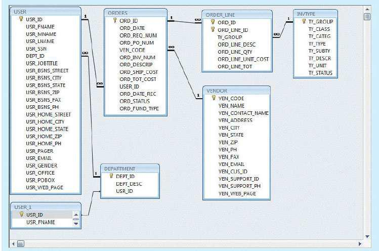
SOURCE: Course Technology/Cengage Learning
The following examples explain how to use ColdFusion and PHP to create a simple Web page to list the VENDOR rows. The scripts used in these examples perform two basic tasks:
1. Query the database using standard SQL to retrieve a data set that contains all records in the VENDOR table. The examples will use an ODBC data source named RobCor. The ODBC data source was defined using the operating system tools shown in Section 14.1.2.
2. Format the records generated in Step 1 in HTML so they are included in the Web page that is returned to the client browser.
Figure 14.11 shows the ColdFusion code to query the VENDOR table.
FIGURE 14.11 ColdFusion code to query the VENDOR table
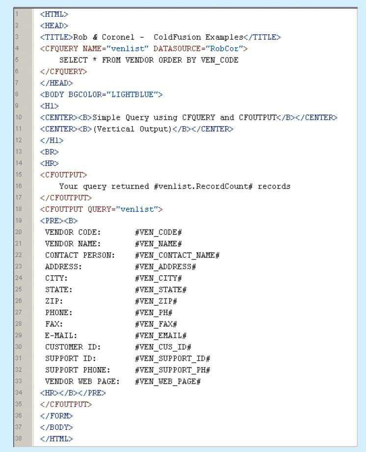
SOURCE: Course Technology/Cengage Learning
In the code in Figure 14.11, note that its ColdFusion tags are CFQUERY (to query a database) and CFOUTPUT (to display the data returned by the query). Take a closer look at these two CFML tags:
• <CFQUERY> tag (lines 4–6). This tag sets the stage for the database connection and the execution of the enclosed SQL statement. The CFQUERY tag uses the following parameters:
- NAME = “queryname”. This name uniquely identifies the record set returned by the database query.
- DATASOURCE = “datasourcename”. This parameter uses the previously defined ODBC data source name.
- The SQL statement (line 5) is the SQL code used to retrieve the data rows from the VENDOR table.
• <CFOUTPUT> tag (lines 15–17 and 18–35). This tag is used to display the results from a CFQUERY or to call other ColdFusion variables or functions. Its parameters are:
- QUERY = “queryname”. This is an optional parameter (see line 18). The tag works like a loop that is executed as many times as the number of rows in the named query set. You can include any valid HTML tags or text within the opening and closing CFOUTPUT tags.
- ColdFusion uses pound signs (#) to reference query fields in the resulting query set or to call other ColdFusion variables. For example, #venlist.RecordCount# (line 16) displays the number of rows returned by the “venlist” query result set.
- Lines 19-34 are repeated as a loop, one for each record returned in the named query.
Figure 14.12 shows the PHP code to query the VENDOR table.
FIGURE 14.12 PHP code to query the VENDOR table
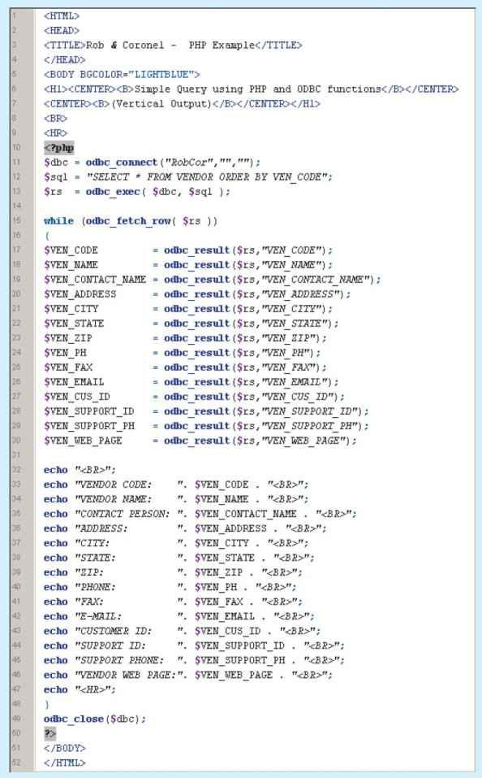
SOURCE: Course Technology/Cengage Learning
In the figure, note that PHP uses multiple tags to query and display the data returned by the query. Take a closer look at the PHP functions:
• The ODBC_CONNECT function (line 11) opens a connection to the ODBC data source. A handle to this database is set in the $dbc variable.
• The ODBC_EXEC function (line 13) executes the SQL query stored in the $sql variable against the $dbc database connection. The query’s result set is stored in the $rs variable.
• The WHILE function (line 15) loops through the result set ($rs) and uses the ODBC_FETCH_ROW function to get one row at a time from the result set. Notice that PHP variables start with the dollar sign ($ ).
• The ODBC_RESULT function (lines 17–30) gets a column value from a row in the result set and stores it in a variable. This function extracts the different values for each field to be displayed and stores them in variables.
• The ECHO function (lines 32–47) outputs text to the Web page using the variables defined in the previous lines. You can also combine text (HTML code) and PHP variables (lines 33–46) using the “.” delimiter.
• The ODBC_CLOSE function closes the database connection.
The previous examples are just two of the many ways you can interface Web pages and databases to Web applications. These examples only scratch the surface of the multiple features that Web application servers provide.
Current-generation systems involve more than just the development of Web-enabled database applications. They also require applications that can communicate with each other and with other systems not based on the Web. Clearly, systems must be able to exchange data in a standard-based format. That is the role of XML.
14.3 EXTENSIBLE MARKUP LANGUAGE (XML)
Companies use the Internet to generate business transactions and integrate data to increase efficiency and reduce costs. These transactions are known as electronic commerce (e-commerce); it enables all types of organizations to sell products and services to a global market. E-commerce transactions—the sale of products or services—can take place between businesses (business-to-business, or B2B) or between a business and a consumer (business-to-consumer, or B2C).
ONLINE CONTENT
To learn more about e-commerce, consult Appendix I, Databases in Electronic Commerce, at www.cengagebrain.com.
Most e-commerce transactions take place between businesses. Because B2B e-commerce integrates business processes among companies, it requires the transfer of business information among different business entities. However, the way in which businesses represent, identify, and use data tends to differ substantially from company to company. As a simple example, some companies use the term product code, while others use item ID.
Until recently, a purchase order traveling over the Web was expected to be in the form of an HTML document. The HTML Web page displayed on the Web browser would include formatting as well as the order details. HTML tags describe how something looks on the Web page, such as typefaces and heading styles, and they often come in pairs to start and end formatting features. For example, the following tags in angle brackets would display FOR SALE in bold Arial font:
<strong><font face=Arial>FOR SALE</font></strong>
If an application needs to get the order data from the Web page, there is no easy way to extract details such as the order number, date, customer number, product code, quantity, or price from an HTML document. The HTML document can only describe how to display the order in a Web browser; it does not permit the manipulation of the order’s data elements. To solve that problem, a new markup language known as Extensible Markup Language was developed.
Extensible Markup Language (XML) is a metalanguage used to represent and manipulate data elements. XML is designed to facilitate the exchange of structured documents, such as orders and invoices, over the Internet. The World Wide Web Consortium (W3C) published the first XML 1.0 standard definition in 1998, setting the stage for giving XML the real-world appeal of being a true vendor-independent platform. Therefore, it is not surprising that XML has rapidly become the data exchange standard for e-commerce applications.
The XML metalanguage allows the definition of new tags, such as <ProdPrice>, to describe the data elements used in an XML document. This ability to extend the language explains the X in XML; the language is said to be extensible. XML is derived from the Standard Generalized Markup Language (SGML), an international standard for the publication and distribution of highly complex technical documents. For example, documents used by the aviation industry and the military services are too complex and unwieldy for the Web. Just like HTML, which was also derived from SGML, an XML document is a text file. However, it has a few important additional characteristics:
• XML allows the definition of new tags to describe data elements.
• XML is case sensitive: <ProductID> is not the same as <Productid>.
• XML must be well formed; that is, tags must be properly formatted. Most openings also have a corresponding closing. For example, a product’s identification would require the format <ProductId>2345-AA</ProductId>.
• XML must be properly nested. For example, properly nested XML might look like this: <Product><ProductId>2345-AA</ProductId></Product>.
• You can use the <-- and --> symbols to enter comments in the XML document.
• The XML and xml prefixes are reserved for XML only.
XML is not a new version or replacement for HTML. XML is concerned with the description and representation of the data, rather than the way the data are displayed. XML provides the semantics that facilitate the sharing, exchange, and manipulation of structured documents over organizational boundaries. XML and HTML perform complementary functions rather than overlapping functions. Extensible Hypertext Markup Language (XHTML) is the next generation of HTML based on the XML framework. The XHTML specification expands the HTML standard to include XML features. Although it is more powerful than HTML, XHTML requires strict adherence to syntax requirements.
To illustrate the use of XML for data exchange purposes, consider a B2B example in which Company A uses XML to exchange product data with Company B over the Internet. Figure 14.13 shows the contents of the productlist.xml document.
FIGURE 14.13 Contents of the productlist.xml document
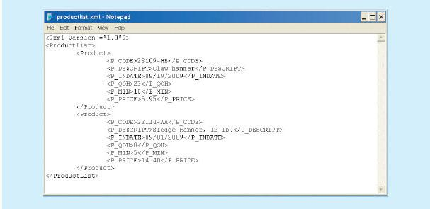
SOURCE: Course Technology/Cengage Learning
The preceding example illustrates several important XML features:
• The first line represents the XML document declaration, and it is mandatory.
• Every XML document has a root element. In the example, the second line declares the ProductList root element.
• The root element contains child elements or subelements. In the example, line 3 declares Product as a child element of ProductList.
• Each element can contain subelements. For example, each Product element is composed of several child elements, represented by P_CODE, P_DESCRIPT, P_INDATE, P_QOH, P_MIN, and P_PRICE.
Once Company B receives productlist.xml, it can process the document, assuming that it understands the tags created by Company A. The meaning of the XML in Figure 14.13 is fairly self-evident, but there is no easy way to validate the data or to check whether the data are complete. For example, you could encounter a P_INDATE value of “25/14/2009,” but is that value correct? What happens if Company B expects a Vendor element as well? How can companies share data descriptions about their business data elements? The next section shows how document type definitions and XML schemas are used to address such concerns.
14.3.1 DOCUMENT TYPE DEFINITIONS (DTD) AND XML SCHEMAS
Companies that use B2B transactions must have a way to understand and validate each other’s tags. One way to accomplish that task is through the use of document type definitions. A document type definition (DTD) is a file with a .dtd extension that describes XML elements—in effect, a DTD file provides the composition of the database’s logical model and defines the syntax rules or valid elements for each type of XML document. (The DTD component is similar to having a public data dictionary for business data.) Companies that intend to engage in e-commerce transactions must develop and share DTDs. Figure 14.14 shows the productlist.dtd document for the productlist.xml document shown earlier in Figure 14.13.
FIGURE 14.14 Contents of the productlist.dtd document
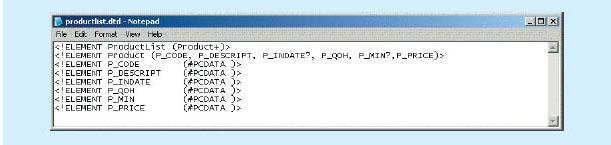
SOURCE: Course Technology/Cengage Learning
In Figure 14.14, the productlist.dtd file provides definitions of the elements in the productlist.xml document. In particular, note the following:
• The first line declares the ProductList root element.
• The ProductList root element has one child, the Product element. The second line describes the Product element.
• The plus (+) symbol indicates that Product occurs one or more times within ProductList.
• An asterisk (*) would mean that the child element occurs zero or more times.
• The question mark (?) after P_INDATE and P_MIN indicates that they are optional child elements.
• The third through eighth lines show that the Product element has six child elements.
• The #PCDATA keyword represents the actual text data.
To be able to use a DTD file to define elements within an XML document, the DTD must be referenced within that XML document. Figure 14.15 shows the productlistv2.xml document that includes the reference to productlist.dtd in the second line.
FIGURE 14.15 Contents of the productlistv2.xml document
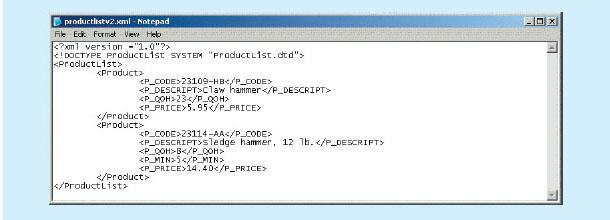
SOURCE: Course Technology/Cengage Learning
In Figure 14.15, note that P_INDATE and P_MIN do not appear in all Product definitions because they were declared to be optional elements. The DTD can be referenced by many XML documents of the same type. For example, if Company A routinely exchanges product data with Company B, it will need to create the DTD only once. All subsequent XML documents will refer to the DTD, and Company B will be able to verify the data being received.
To further demonstrate the use of XML and DTD for e-commerce data exchanges, consider the case of two companies exchanging order data. Figure 14.16 shows the DTD and XML documents for that scenario.
FIGURE 14.16 DTD and XML documents for order data
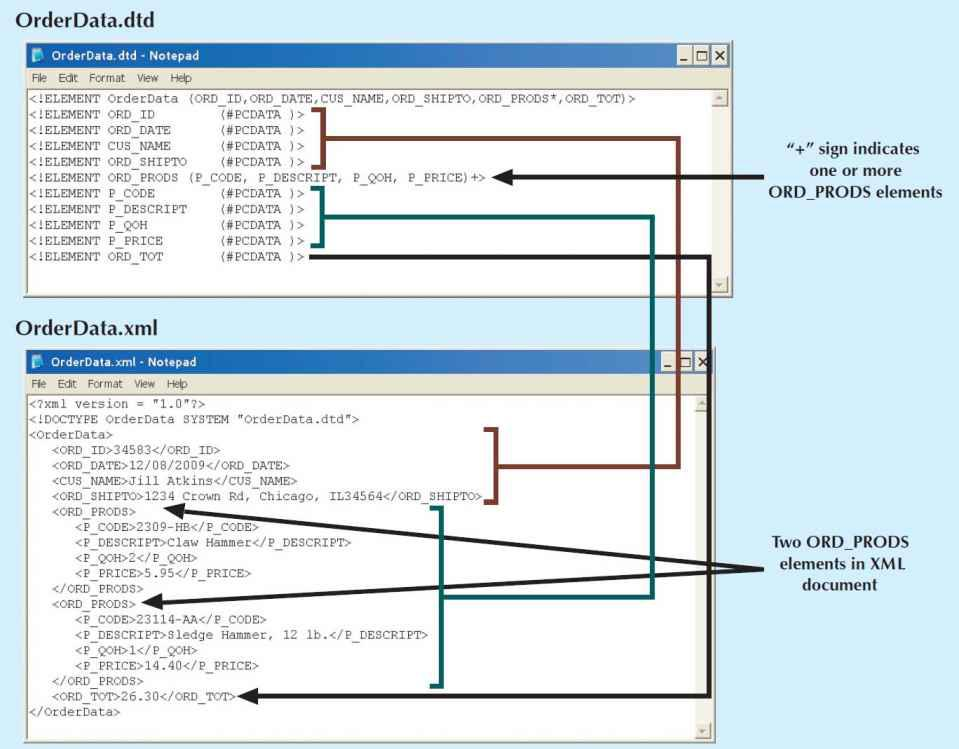
SOURCE: Course Technology/Cengage Learning
Although the use of DTDs is a great improvement for data sharing over the Web, a DTD only provides descriptive information for understanding how the elements—root, parent, child, mandatory, or optional—relate to one another. A DTD provides limited additional semantic value, such as data type support or data validation rules. That information is very important for database administrators who are in charge of large e-commerce databases. To solve the DTD problem, the W3C published an XML schema standard that better describes XML data.
The XML schema is an advanced data definition language that is used to describe the structure of XML data documents. This structure includes elements, data types, relationship types, ranges, and default values. One of the main advantages of an XML schema is that it more closely maps to database terminology and features. For example, an XML schema can define common database types such as date, integer, or decimal; minimum and maximum values; a list of valid values; and required elements. Using the XML schema, a company would be able to validate data for values that may be out of range, have incorrect dates, contain invalid values, and so on. For example, a university application must be able to specify that a GPA value is between 0 and 4.0, and it must be able to detect an invalid birth date such as “14/13/1987.” (There is no 14th month.) Many vendors are adopting this new standard and are supplying tools to translate DTD documents into XML schema definition documents. It is widely expected that XML schemas will replace DTD as the method to describe XML data.
Unlike a DTD document, which uses a unique syntax, an XML schema definition (XSD) file uses a syntax that resembles an XML document. Figure 14.17 shows the XSD document for the OrderData XML document.
FIGURE 14.17 The XML schema document for the order data
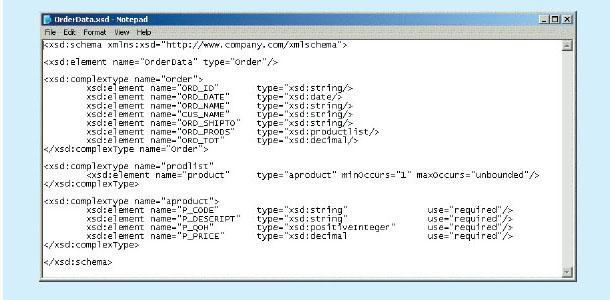
SOURCE: Course Technology/Cengage Learning
The code shown in Figure 14.17 is a simplified version of the XML schema document. As you can see, the XML schema syntax is similar to the XML document syntax. However, the XML schema introduces additional semantic information for the OrderData XML document, such as string, date, and decimal data types; required elements; and minimum and maximum cardinalities for the data elements.
One of the main benefits of XML is that it separates data structure from its presentation and processing. By separating the two, you can present the same data in different ways—which is similar to having views in SQL. The Extensible Style Language (XSL) specification provides the mechanism to display XML data. XSL is used to define the rules by which XML data are formatted and displayed. The XSL specification is divided into two parts: Extensible Style Language Transformations (XSLT) and XSL style sheets.
• Extensible Style Language Transformations (XSLT) describes the general mechanism that is used to extract and process data from one XML document and enable its transformation within another document. Using XSLT, you can extract data from an XML document and convert it into a text file, an HTML Web page, or a Web page that is formatted for a mobile device. What the user sees in those cases is actually a view (or HTML representation) of the XML data. XSLT can also be used to extract certain elements from an XML document, such as product codes and product prices, to create a product catalog. XSLT can even be used to transform one XML document into another.
• XSL style sheets define the presentation rules applied to XML elements—somewhat like presentation templates. The XSL style sheet describes the formatting options to apply to XML elements when they are displayed on a browser, smart phone, tablet screen, and so on.
Figure 14.18 illustrates the framework used by the various components to translate XML documents into viewable Web pages, an XML document, or some other document.
FIGURE 14.18 Framework for XML transformations
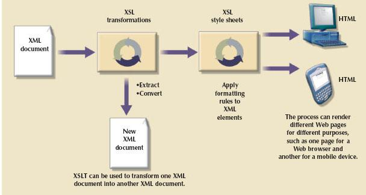
SOURCE: Course Technology/Cengage Learning
To display the XML document with Windows Internet Explorer (IE) 5.0 or later, enter the URL of the XML document in the browser’s address bar. Figure 14.19 is based on the productlist.xml document created earlier. As you examine Figure 14.19, note that IE shows the XML data in a color-coded, collapsible, treelike structure. (Actually, this is the IE default style sheet that is used to render XML documents.)
FIGURE 14.19 Displaying XML documents
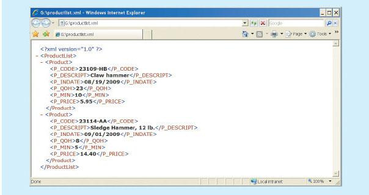
SOURCE: Course Technology/Cengage Learning
Internet Explorer also provides data binding of XML data to HTML documents. Figure 14.20 shows the HTML code that is used to bind an XML document to an HTML table. The example uses the <xml> tag to include the XML data in the HTML document and later bind it to the HTML table. This example works in IE 5.0 or later.
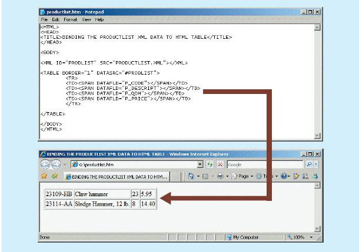
SOURCE: Course Technology/Cengage Learning
Now that you have some idea what XML is, how can you use it? What kinds of applications lend themselves particularly well to XML? This section lists some of the uses of XML. Keep in mind that the future use of XML is limited only by the imagination and creativity of developers, designers, and programmers.
• B2B exchanges. XML enables the exchange of B2B data, providing the standard for all organizations that need to exchange data with partners, competitors, the government, or customers. In particular, XML is positioned to replace EDI as the standard for automation of the supply chain because it is less expensive and more flexible.
• Legacy systems integration. XML provides the “glue” to integrate legacy system data with modern e-commerce Web systems. Web and XML technologies could be used to inject some new life into old but trusted legacy applications. Another example is the use of XML to import transaction data from multiple databases to a data warehouse database.
• Web page development. XML provides several features that make it a good fit for certain Web development scenarios. For example, Web portals with large amounts of personalized data can use XML to pull data from multiple external sources (such as news, weather, and stock sites) and apply different presentation rules to format pages on desktop computers as well as mobile devices.
• Database support. A DBMS that supports XML exchanges can integrate with external systems such as the Web, mobile data, and legacy systems, thus enabling the creation of new types of systems. These databases can import or export data in XML format or generate XML documents from SQL queries while still storing the data using their native data model format. An example is the use of the FOR XML clause in the SQL SELECT statement in SQL Server. Alternatively, a DBMS can also support an XML data type to store XML data in its native format—enabling support to store treelike hierarchical structures inside a relational structure.
• Database metadictionaries. XML is also used to create metadictionaries, or vocabularies, for entire industries. Examples of metadictionaries include HR-XML for the human resources industry, the metadata encoding and transmission standard (METS) from the Library of Congress, the clinical accounting information (CLAIM) data exchange standard for patient data exchange in electronic medical record systems, and the extensible business reporting language (XBRL) standard for exchanging business and financial information.
• XML databases.1 Most databases on the market support XML to manage data in some shape or form. The approaches range from simple middleware XML software to object databases with XML interfaces to full XML database engines and servers. XML databases provide for the storage of data in complex relationships. For example, an XML database would be well suited to store the contents of a book. The book’s structure would dictate its database structure: a book typically consists of chapters, sections, paragraphs, figures, charts, footnotes, endnotes, and so on. Examples of XML databases are Oracle, IBM DB2, MS SQL Server, Ipedo XML Database (www.ipedo.com), Tamino from Software AG (www.softwareag.com), and the open source dbXML from http://sourceforge.net/projects/dbxml-core.
• XML services. Many companies are already working to develop a new breed of services based on XML and Web technologies. These services break down the interoperability barriers among systems and companies alike. XML provides the infrastructure that helps heterogeneous systems to work together across the desk, the street, and the world. Services would use XML and other Internet technologies to publish their interfaces. Other services that want to interact with existing services would locate them and learn their vocabulary (service request and replies) to establish a “conversation.”
One area in which Internet, Web, virtualization, and XML technologies work together in innovative ways to leverage IT services is “cloud computing.”
You have almost certainly heard about the “cloud” from the thousands of publications and TV ads that have used the term over the years, although it has represented different concepts. In the late 1980s, the term cloud was used by telecommunication companies to describe their data networks. In the late 1990s, during the peak of Internet growth, the term depicted the Internet itself. Then, in 2006, Google and Amazon began using the term cloud computing to describe a new set of innovative Web-based services. Google, Yahoo, eBay, and Amazon were the early adopters of this new computing paradigm.
But what exactly is cloud computing? According to the National Institute of Standards and Technology (NIST),2cloud computing is “a computing model for enabling ubiquitous, convenient, on-demand network access to a shared pool of configurable computer resources (e.g., networks, servers, storage, applications and services) that can be rapidly provisioned and released with minimal management effort or service provider interaction.” The term cloud services is used in this book to refer to the services provided by cloud computing. Cloud services allow any organization to quickly and economically add information technology services such as applications, storage, servers, processing power, databases, and infrastructure to its IT portfolio. Figure 14.21 shows a representation of cloud computing services on the Internet.
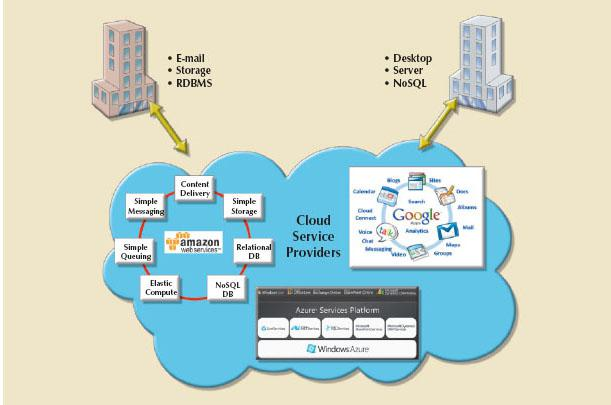
SOURCE: Course Technology/Cengage Learning
Cloud computing allows highly specialized, IT-savvy organizations such as Amazon, Google, and Microsoft to build high-performance, fault-tolerant, flexible, and scalable IT services. These services include applications, storage, servers, processing power, databases, and e-mail, which are delivered via the Internet to individuals and organizations using a pay-as-you-go price model.
For example, imagine that the chief technology officer of a nonprofit organization wants to add e-mail services to the IT portfolio. A few years ago, this proposition would have implied building the e-mail system’s infrastructure from the ground up, including hardware, software, setup, configuration, operation, and maintenance. However, in today’s cloud computing era, you can use Google Apps for Business or Microsoft Exchange Online and get a scalable, flexible, and more reliable e-mail solution for a fraction of the cost. The best part is that you do not have to worry about the daily chores of managing and maintaining the IT infrastructure, such as OS updates, patches, security, fault tolerance, and recovery. What used to take months or years to implement can now be done in a matter of minutes. If you need more space, you just add another storage unit to your storage cloud. If you need more processing power to handle last-minute orders during the busy Christmas season, you simply add more processing units to your cloud servers. Even more importantly, you can scale down as easily as you scaled up. Once your need for additional processing or storage subsides, you can go back to your previous levels of usage and pay only for what you use. The beauty of cloud services is that you can scale down automatically, without an administrator’s intervention.
Cloud computing is important for database technologies because it has the potential to become a “game changer.” Cloud computing eliminates financial and technological barriers so organizations can leverage database technologies in their business processes with minimal effort and cost. In fact, cloud services have the potential to turn basic IT services into “commodity” services such as electricity, gas, and water, and to enable a revolution that could change not only the way that companies do business, but the IT business itself. As Nicholas Carr put it so vividly: “Cloud computing is for IT what the invention of the power grid was for electricity.”3
The technologies that make cloud computing work have been around for a few years now; these technologies include the Web, messaging, virtualization, remote desktop protocols, VPN, and XML. However, cloud computing itself is still in the early years and needs to mature further before it can be widely adopted. Despite this, more and more organizations are tapping into cloud services to secure advanced database services (relational or NoSQL) for their organizations. Currently, you can log in to Amazon Web Services (AWS) or Microsoft Azure and have a relational database ready for use in a matter of minutes. Instead of spending large amounts of cash buying hardware and software, organizations can employ a pay-per-use model for their IT services. Figure 14.22 depicts the cost of provisioning a relational database instance in Microsoft Azure and Amazon RDS services, respectively.
FIGURE 14.22 Provisioning an RDBMS in the cloud
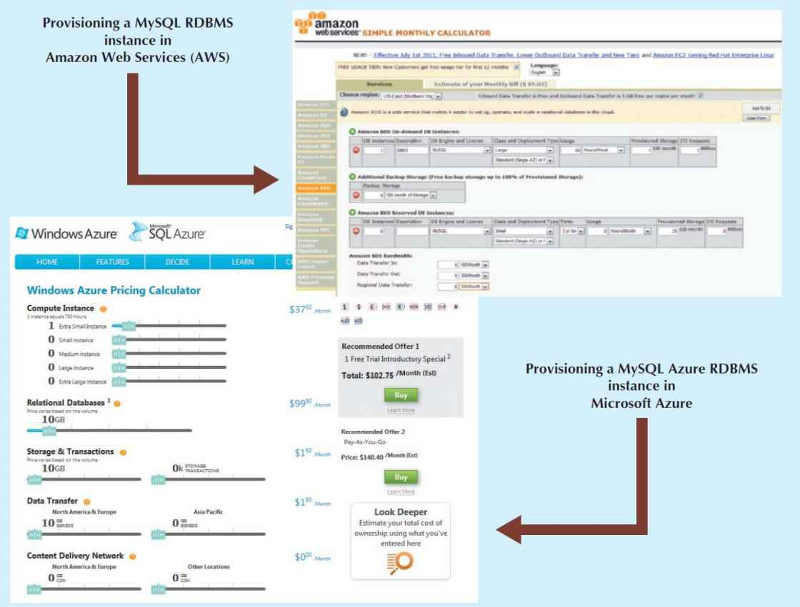
SOURCE: Course Technology/Cengage Learning
Although Figure 14.22 shows a cloud that requires some degree of customization on the customer’s part, other cloud computing services are more transparent to the user and require less customization. For example, Dropbox is a simple cloud service that lets you synchronize your documents, photos, music, and other files transparently over the Internet across many devices. In 2011, Apple announced a similar service, known as iCloud. Both services work transparently behind the scenes with minimal end-user intervention. As you can see, cloud computing implementations vary; the next section explains the basic types.
14.4.1 CLOUD IMPLEMENTATION TYPES
Cloud computing has different types of implementations based on who the target customers are:
• Public cloud. This type of cloud infrastructure is built by a third-party organization to sell cloud services to the general public. The public cloud is the most common type of cloud implementation; examples include Amazon Web Services (AWS), Google Application Engine, and Microsoft Azure. In this model, cloud consumers share resources with other consumers transparently. The public cloud infrastructure is managed exclusively by the third-party provider.
• Private cloud. This type of internal cloud is built by an organization for the sole purpose of servicing its own needs. Private clouds are often used by large, geographically dispersed organizations to add agility and flexibility to internal IT services. The cloud infrastructure could be managed by internal IT staff or an external third party.
• Community cloud. This type of cloud is built by and for a specific group of organizations that share a common trade, such as agencies of the federal government, the military, or higher education. The cloud infrastructure could be managed by internal IT staff or an external third party.
Regardless of the implementation an organization uses, most cloud services share a common set of core characteristics. These characteristics are explored in the next section.
14.4.2 CHARACTERISTICS OF CLOUD SERVICES
Cloud computing services share a set of guiding principles. The characteristics listed in this section are shared by prominent public cloud providers such as Amazon, Google, Salesforce, SAP, and Microsoft. The prevalent characteristics are:
• Ubiquitous access via Internet technologies. All cloud services use Internet and Web technologies to provision, deliver, and manage the services they provide. The basic requirement is that the device has access to the Internet.
• Shared infrastructure. The cloud service infrastructure is shared by multiple users. Sharing is made possible by Web and virtualization technologies. Cloud services effectively provide an organization with a virtual IT infrastructure, which is locally managed by the consumer’s organization as if it were the only user of the infrastructure.
• Lower costs and variable pricing. The initial costs of using cloud services tend to be significantly lower than building on-premise IT infrastructures. According to some studies,4 the savings could range from 35 percent to 55 percent depending on company size, although more research is needed in this area. Because the Web service’s usage is metered per volume and time utilization, consumers benefit from lower and flexible pricing options. These options range from pay-as-you-go to fixed pricing based on minimum levels of service.
• Flexible and scalable services. The cloud services are built on an infrastructure that is highly scalable, fault tolerant, and very reliable. The services can scale up and down on demand according to resource demands.
• Dynamic provisioning. The consumer can quickly provision any needed resources, including servers, processing power, storage, and e-mail, by accessing the Web management dashboard and then adding and removing services on demand. This process also could be automated via other services.
• Service orientation. Cloud computing focuses on providing consumers with specific, well-defined services that use well-known interfaces. These interfaces hide the complexity from the end user, and can be delivered anytime and anywhere.
• Managed operations. Cloud computing minimizes the need for extensive and expensive in-house IT staff. The system infrastructure is managed by the cloud provider. The consumer organization’s IT staff is free from routine management and maintenance tasks so they can focus on other tasks within the organization. Managed operations apply to organizations that use public clouds and that outsource cloud management to an external third party.
The preceding list is not exhaustive, but it is a starting point to understand most cloud computing offerings. Although most companies move to cloud services because of cost savings, some companies move to them because they are the best way to gain access to specific IT resources that would otherwise be unavailable. Not all cloud services are the same; in fact, there are several different types, as explained in the next section.
14.4.3 TYPES OF CLOUD SERVICES
Cloud services come in different shapes and forms; no single type of service works for all consumers. In fact, cloud services often follow an “à la carte” model; consumers can choose multiple service options according to their individual needs. These services can build on top of each other to provide sophisticated solutions. Based on the types of services provided, cloud services can be classified by the following categories:
• Software as a Service (SaaS). The cloud service provider offers turnkey applications that run in the cloud. Consumers can run the provider’s applications internally in their organizations via the Web or any mobile device. The consumer can customize certain aspects of the application but cannot make changes to the application itself. The application is actually shared among users from multiple organizations. Examples of SaaS include MS Office Live, Google Docs, Intuit’s TurboTax Online, and SCALA digital signage.
• Platform as a Service (PaaS). The cloud service provider offers the capability to build and deploy consumercreated applications using the provider’s cloud infrastructure. In this scenario, the consumer can build, deploy, and manage applications using the provider’s cloud tools, languages, and interfaces. However, the consumer does not manage the underlying cloud infrastructure. Examples of PaaS include the Microsoft Azure platform with .NET and the Java development environment, and Google Application Engine with Python or Java.
• Infrastructure as a Service (IaaS). In this case, the cloud service provider offers consumers the ability to provision their own resources on demand; these resources include storage, servers, databases, processing units, and even a complete virtualized desktop. The consumer then can add or remove the resources as needed. For example, a consumer can use AWS and provision a server computer that runs Linux and Apache Web server using 16 GB of RAM and 160 GB of storage.
Figure 14.23 illustrates a sample of the different types of cloud services; these services can be accessed from any computing device.
FIGURE 14.23 Types of cloud services
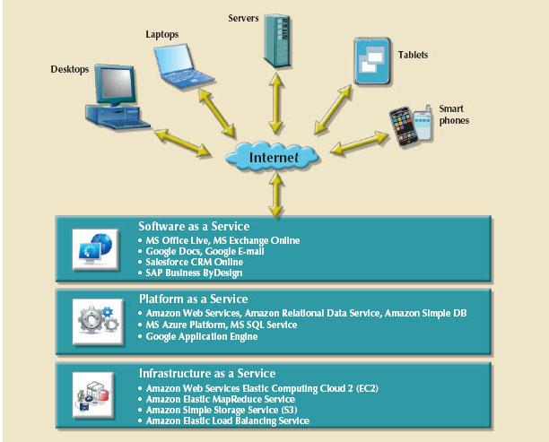
SOURCE: Course Technology/Cengage Learning
Cloud computing services have evolved in their sophistication and flexibility. The merging of new technologies has enabled the creation of new options such as “desktop as a service,” which effectively creates a virtual computer on the cloud that can be accessed from any device over the Internet. For example, you can use a service such as Desktone (www.desktone.com) and get a Windows 7 desktop running over the Web for your personal use in a matter of minutes. Moreover, you can access your virtual desktop via the Web browser or using any Remote Desktop Protocol (RDP) application.
14.4.4 CLOUD SERVICES: ADVANTAGES AND DISADVANTAGES
Cloud computing has grown remarkably in the past few years. Companies of all sizes are enjoying the advantages of cloud computing, but its widespread adoption is still limited by several factors.5Table 14.4 summarizes the main advantages and disadvantages of cloud computing.
TABLE 14.4 Advantages and Disadvantages of Cloud Computing
ADVANTAGE | DISADVANTAGE |
Low initial cost of entry. Cloud computing has lower costs of entry when compared with the alternative of building in house. | Issues of security, privacy, and compliance. Trusting sensitive company data to external entities is difficult for most data-cautious organizations. |
Scalability/elasticity. It is easy to add and remove resources on demand. | Hidden costs of implementation and operation. It is hard to estimate bandwidth and data migration costs. |
Support for mobile computing. Cloud computing providers support multiple types of mobile computing devices. | Data migration is a difficult and lengthy process. Migrating large amounts of data to and from the cloud infrastructure can be difficult and time-consuming. |
Ubiquitous access. Consumers can access the cloud resources from anywhere at any time, as long as they have Internet access. | Complex licensing schemes. Organizations that imple-ment cloud services are faced with complex licensing schemes and complicated service-level agreements. |
High reliability and performance. Cloud providers build solid infrastructures that otherwise are difficult for the average organization to leverage. | Loss of ownership and control. Companies that use cloud services are no longer in complete control of their data. What is the responsibility of the cloud provider if data are breached? Can the vendor use your data without your consent? |
Fast provisioning. Resources can be provisioned on demand in a matter of minutes with minimal effort. | Organization culture. End users tend to be resistant to change. Do the savings justify being dependent on a single provider? Will the cloud provider be around in 10 years? |
Managed infrastructure. Most cloud implementations are managed by dedicated internal or external staff. This allows the organization’s IT staff to focus on other areas. | Difficult integration with internal IT system. Configuring the cloud services to integrate transparently with inter-nal authentication and other internal services could be a daunting task. |
As the table shows, the top perceived benefit of cloud computing is the lower cost of entry. At the same time, the chief concern of cloud computing is data security and privacy, particularly in companies that deal with sensitive data and are subject to high levels of regulation and compliance.6 This concern leads to the perception that cloud services are mainly implemented in small to medium-sized companies where the risk of service loss is minimal. In fact, some companies that are subject to strict data security regulations tend to favor private clouds rather than public ones.7
One of the biggest growth segments in cloud services is mobile computing. For example, Netflix,8 the video-on-demand trailblazer, announced in 2011 that it had moved significant parts of its IT infrastructure to AWS. Netflix decided to move to the cloud because of the challenges of building IT infrastructure fast enough to keep up with its relentless growth.
NOTE
Cloud Reality Check: Is the Cloud Enterprise Ready?
In April 2011, Amazon’s cloud services suffered a well-publicized outage.9 The cloud infrastructure in one of the main service areas slowed to a crawl. Many well-known Web companies that depend on AWS, including Reddit, Foursquare, Quora, and HotPads, were faced with sluggish and sometimes inaccessible Websites. In a matter of hours, several Websites disappeared from the cloud! This was the biggest test of cloud reliability to date. Amazon technicians worked for the next several days to recover service to all the Websites, but questions about cloud reliability still linger.
Regardless of a company’s size, databases remain at the center of all system development. Cloud computing brings a new dimension to data management that is within reach of any type of organization.
As you have seen in this chapter, data access technologies have evolved from simple ODBC data retrieval to advanced remote data processing using ADO.NET and XML. At the same time, companies are looking for ways to better manage ever-growing amounts of data while controlling costs without sacrificing data management features. Cloud computing provides a relatively stable and reliable platform for developing and deploying business services; cloud vendors have expanded their business to offer SQL data services. SQL data services (SDS) refers to a cloud computing-based data management service that provides relational data storage, access, and management to companies of all sizes without the typically high costs of in-house hardware, software, infrastructure, and personnel. This type of service provides some unique benefits:
• Hosted data management. SDS typically uses a cluster of database servers that provide a large subset of database functionality over the Internet to database administrators and users. Typically, features such as SQL queries, indexing, stored procedures, triggers, reporting, and analytical functions are available to end users. Other features such as data synchronization, data backup and restore, and data importing and exporting are available for administrative purposes.
• Standard protocols. SDS uses standard data communication and relational data access protocols. Typically, these services encapsulate SQL networking protocols, such as SQL-Net for Oracle databases and Tabular Data Services (TDS) for Microsoft SQL Server databases, inside the TCP/IP networking protocol.
• A common programming interface. SDS is transparent to application developers. Programmers continue to use familiar programming interfaces such as ADO.NET and Visual Studio .NET to manipulate the data. Programmers write embedded SQL code in their applications and connect to the database as if the data were stored locally instead of in a remote location on the Internet. One potential disadvantage, however, is that some specialized data types may not be supported by SDS.
SQL data services offer the following advantages when compared with in-house systems:
• Highly reliable and scalable relational database for a fraction of the cost
• High level of failure tolerance because data are normally distributed and replicated among multiple servers
• Dynamic and automatic load balancing
• Automated data backup and disaster recovery included with the service
• Dynamic creation and allocation of database processes and storage
Cloud providers such as Amazon and Microsoft allow you to get your own database server running in a matter of minutes. Even better, you do not have to worry about backups, fault tolerance, scalability, and routine maintenance tasks. The use of SQL data services enables rapid application development for businesses with limited information technology resources, and allows them to rapidly deploy business solutions. A consumer of cloud services is free to use the database to create the best solution for the problem at hand. However, having access to relational database technology via a SQL data service is just the start—you still need to be knowledgeable in database design and SQL to develop high-quality applications.
 Database connectivity refers to the mechanisms through which application programs connect and communicate with data repositories. Database connectivity software is also known as database middleware.
Database connectivity refers to the mechanisms through which application programs connect and communicate with data repositories. Database connectivity software is also known as database middleware.
Microsoft database connectivity interfaces are dominant players in the market and enjoy the support of most database vendors. ODBC, OLE-DB, and ADO.NET form the backbone of Microsoft’s Universal Data Access (UDA) architecture.
Native database connectivity refers to the connection interface that is provided by the database vendor and is unique to that vendor. ODBC is probably the most widely supported database connectivity interface. ODBC allows any Windows application to access relational data sources using standard SQL. Data Access Objects (DAO) is an older, object-oriented application interface. Remote Data Objects (RDO) is a higher-level, object-oriented application interface used to access remote database servers. RDO was optimized to deal with server-based databases such as MS SQL Server and Oracle.
Object Linking and Embedding for Database (OLE-DB) is database middleware developed with the goal of adding object-oriented functionality for access to relational and nonrelational data. ActiveX Data Objects (ADO) provides a high-level, application-oriented interface to interact with OLE-DB, DAO, and RDO. Based on ADO, ADO.NET is the data access component of Microsoft’s .NET application development framework. Java Database Connectivity (JDBC) is the standard way to interface Java applications with data sources.
Database access through the Web is achieved through middleware. To improve the capabilities on the client side of the Web browser, you must use plug-ins and other client-side extensions such as Java and JavaScript, or ActiveX and VBScript. On the server side, Web application servers are middleware that expand the functionality of Web servers by linking them to a wide range of services, such as databases, directory systems, and search engines.
Extensible Markup Language (XML) facilitates the exchange of B2B and other data over the Internet. XML provides the semantics that facilitate the exchange, sharing, and manipulation of structured documents across organizational boundaries. XML produces the description and the representation of data, thus setting the stage for data manipulation in ways that were not possible before. XML documents can be validated through the use of document type definition (DTD) documents and XML schema definition (XSD) documents.
Cloud computing is a computing model that provides ubiquitous, on-demand access to a shared pool of configurable resources that can be rapidly provisioned. SQL data services (SDS) refers to a cloud computing-based data management service that provides relational data storage, ubiquitous access, and local management to companies of all sizes. This service enables rapid application development for businesses with limited information technology resources. SDS allows rapid deployment of business solutions using standard protocols and common programming interfaces.
ONLINE CONTENT
Flashcards and crossword puzzles for key term practice are available at www.cengagebrain.com.
1. Give some examples of database connectivity options and what they are used for.
2. What are ODBC, DAO, and RDO? How are they related?
3. What is the difference between DAO and RDO?
4. What are the three basic components of the ODBC architecture?
5. What steps are required to create an ODBC data source name?
6. What is OLE-DB used for, and how does it differ from ODBC?
7. Explain the OLE-DB model based on its two types of objects.
8. How does ADO complement OLE-DB?
9. What is ADO.NET, and what two new features make it important for application development?
10. What is a DataSet, and why is it considered to be disconnected?
11. What are Web server interfaces used for? Give some examples.
12. Search the Internet for Web application servers. Choose one and prepare a short presentation for your class.
13. What does this statement mean: “The Web is a stateless system.” What implications does a stateless system have for database application developers?
14. What is a Web application server, and how does it work from a database perspective?
15. What are scripts, and what is their function? (Think in terms of database application development.)
16. What is XML, and why is it important?
17. What are document type definition (DTD) documents, and what do they do?
18. What are XML schema definition (XSD) documents, and what do they do?
19. What is JDBC, and what is it used for?
20. What is cloud computing, and why is it a “game changer”?
21. Name and contrast the types of cloud computing implementation.
22. Name and describe the most prevalent characteristics of cloud computing services.
23. Using the Internet, search for providers of cloud services. Then, classify the types of services they provide (SaaS, PaaS, and IaaS).
24. Summarize the main advantages and disadvantages of cloud computing services.
25. Define SQL data services and list their advantages.
ONLINE CONTENT
The databases used in the Problems for this chapter are available at www.cengagebrain.com.
In the following exercises, you will set up database connectivity using MS Excel.
1. Use MS Excel to connect to the Ch02_InsureCo MS Access database using ODBC, and retrieve all of the AGENTs.
2. Use MS Excel to connect to the Ch02_InsureCo MS Access database using ODBC, and retrieve all of the CUSTOMERs.
3. Use MS Excel to connect to the Ch02_InsureCo MS Access database using ODBC, and retrieve the customers whose AGENT_CODE is equal to 503.
4. Create a System DSN ODBC connection called Ch02_SaleCo using the Administrative Tools section of the Windows Control Panel.
5. Use MS Excel to list all of the invoice lines for Invoice 103 using the Ch02_SaleCo System DSN.
6. Create a System DSN ODBC connection called Ch02_Tinycollege using the Administrative Tools section of the Windows Control Panel.
7. Use MS Excel to list all classes taught in room KLR200 using the Ch02_TinyCollege System DSN.
To answer Problems 8–11, use Section 14.3.1 as your guide.
8. Create a sample XML document and DTD for the exchange of customer data.
9. Create a sample XML document and DTD for the exchange of product and pricing data.
10. Create a sample XML document and DTD for the exchange of order data.
11. Create a sample XML document and DTD for the exchange of student transcript data. Use your college transcript as a sample.
1 For a comprehensive analysis of XML database products, see “XML Database Products” by Ronald Bourret at www.rpbourret.com.
2Recommendations of the National Institute of Standards and Technology, Peter Mell and Timothy Grance, Special Publication 800-145 (Draft), January 2011.
3 Nicholas Carr, The Big Switch: Rewiring the World, from Edison to Google, W.W. Norton & Co., 2009.
4 “The Compelling TCO Case for Cloud Computing in SMB and Mid-Market Enterprises: A 4-year total cost of ownership (TCO) perspective comparing cloud and on-premise business application development,” Sanjeev Aggarwal, Partner; Laurie McCabe, Partner; Hurwitz & Associates, 2009.
5 “2011 Cloud Computing Outlook: Survey Results,” www.cloud.com/cloud-computing-outlook/survey.pdf.
6 “Are security issues delaying adoption of cloud computing?,” Ellen Messmer, Network World, April 27, 2009.
7 “Lessons From FarmVille,” Charles Babcock, InformationWeek, May 16, 2011.
8 “NoSQL at Netflix,” Yuri Israilevsky, Director of Cloud and Systems Infrastructure at Netflix, January 28, 2111, http://techblog.netflixx.com/2011/nosql—at—netflix.html.
9 “When Amazon’s Cloud Turned On Itself,” Charles Babcock, InformationWeek, May 16, 2011.